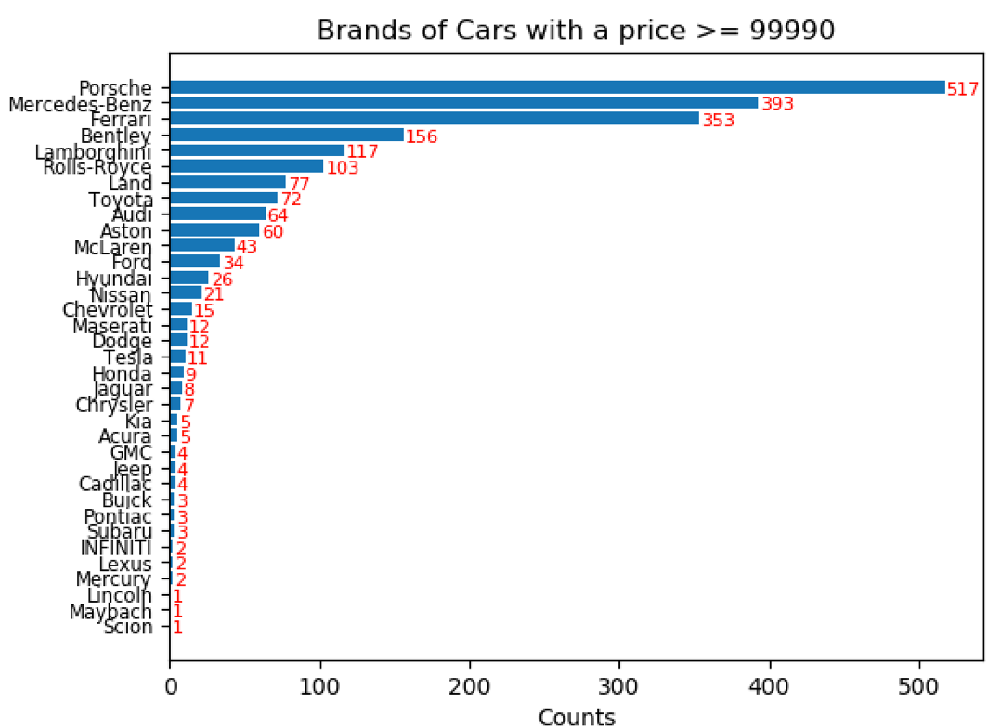

Truecar.com Dataset Cleaning
There is another dataset has been mainly used, called TrueCar.com which was directly collected from Kaggle. The TrueCar.com dataset contains 8 features (“Price”, “Year”, “Mileage”, “City”, “State”, “Vin”, “Make”, “Model”) and about 1.2 million records. And each record has the information about the used car which is for sale.
Firstly, we considered to deal with the null records and duplicate records in this dataset. And there is no any null values and duplications has been found. To make sure the geographic analysis could be conducted successfully, checking the consistency format of the feature “State” is necessary. We capitalized state abbreviation characters and deleted the extra space.
The next data quality issue we focused on is outliers. We created a new feature (“Mileage per Year”) as in the last data cleaning part which can be used to filter unreasonable mileage records correctly. In this dataset, we used a boxplot to identify this kind of outliers.
Figure 1.2.1 Boxplot before Data Cleaning
code and dataObviously, there is an observation with extreme value in the boxplot above, and we can’t even see the box in the boxplot. Just like previously mentioned, some cars probably listed with wrong mileage and some brand new cars listed in the used cars market. We have decided to remove these kinds of records because mileage is an important feature in the used cars market.
Figure 1.2.2 Boxplot after Data Cleaning
code and dataAccording to the new boxplot above, which is the boxplot after data cleaning, it looks perfect now.
Figure 1.2.3 Mileage vs Price Scatterplot for Hyundai before Data Cleaning
code and dataThen, we have encountered another data quality issue is noise value. According to the scatter plot above, which is the mileage versus price for Hyundai before data cleaning, there are a lot of points lie around $100,000. That is ridiculous because a brand new car of Hyundai usually between $15,000 to $40,000. The used cars should even lower. And we found the same issue for many brands, such as Toyota, Honda etc.
Figure 1.2.4 Brands of Cars with a Price >= $99990
code and dataTo discover which non-expensive car brands appear in the expensive car brands, setting 99990 as a boundary, and plotting the bar chart to get the frequency for different car brands over that price boundary. The records over the price boundary and with one of the brands in “Honda”, “Toyota”, “GMC”, “Kia”, “Subaru”, “Chrysler”, “Mercury”, “Lincoln”, “Hyundai”, “Jeep”, “Chevrolet”, “Scion” were removed. In addition, we can’t remove the records of some car brands, Nissan, Ford and Lexus, because they do have expensive models.
Figure 1.2.5 Mileage vs Price Scatterplot for Hyundai after Data Cleaning
code and dataThe scatter plot above is Mileage Versus Price for Hyundai after data cleaning, it is a lot of better than before.